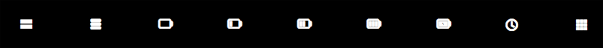
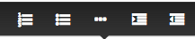
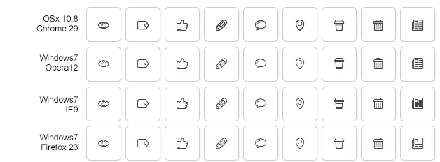
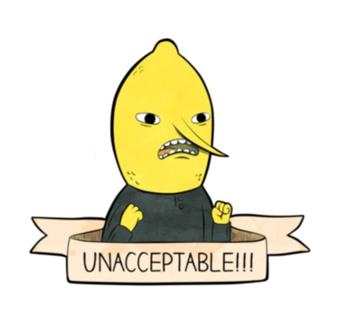

In this blog post we will build consistent, modular and flexible vector icons system with both SVG and CSS.
SVG icons demo:
See the Pen hKxwo by Lego Mushroom (@sol0mka) on CodePen
A lot of great methodologies and principles risen up making our CSS more and more modular, structured and flexible. But think about your icons. Using raster graphics for icons means that they are not manageable in CSS. What if we need to easily change a color of icon in hover/active/focus state? For each icon state we need to add one more icon image. What about size? For each icon's size we need to add yet another icon size image. What about shape? Yep the same thing. Not very comfy, right? So we end up with bloated sprite and style sheets that are hard to support and scale.
The solution was found! Icon fonts. Yes, icon fonts are great.
Font is browser's "achilles' heel" for pixel perfect designs.
The first issue is - font icons are not crisp.
The second one is - every browser renders fonts in its own way so there is no hope to see consistent result across them. In addition to that, every operating system handles font rendering in its own fashion. Take closer look at example below(clickable):

or
or inconsistent blurry icons across browsers:

These are examples I've found on the internet, in real life applications.
There are a lots of them out here. The last one was taken "as is" from popular icon font library.
I believe you have experienced what I'm talking about already. The way font icons could be unpredictably blurry is harmful.
The way they are inconsistently blurry harms the most.
Wonder what designers think about it?

You can't have a multicolor icon. Actually Apple is proposing multicolor fonts and adding an Apple Color Emojji font to OSx Lion. But it might be a while before this becomes a reality.
Effects we can add to it are limited to text-shadow property. There is no way to add, for instance, a nice inset shadow here.
I've experienced problems with icon fonts. Sometimes they were the reason of broken layout(!) and sometimes of suddenly disappeared icons (it is a problem of ill-prepared font I believe).
Despite huge popularity of vector in browser, its age and browsers support we have a lack of SVG flexible icons systems, I've got a chance to fill in that gap. Contemporary, SVG looks like good old guy with super powers. It's time to throw him off the sofa and send him to the gym. Solution I will share here with you based on SVG graphics. Expanding benefits of icon fonts, it will add a power of SVG filters for adding effects and solve font rendering problems. It can be multicolor, it has XML like structure and it is also much and much smaller in size compared to fonts.
Bootstrap is a pure HTML document with linked main.css file - a place where we will write styles for our icons.
Lets add a SVG document to a <body> tag. We will declare icons shapes here in <defs> section in way of clipPath. SVG filters for effects will be placed here too.
<!doctype html>
<html>
<head>
<meta charset=utf-8 />
<link rel="stylesheet" href="main.css">
</head>
<body>
<svg>
<defs>
<!-- we will declare icons shapes and SVG filters for effects here -->
</defs>
</svg>
</body>
</html>Easy peasy. Pretty straightforward. You can download this bootstrap here or fork this pen to follow my step by step instructions.
So we need to get a shape of our first icon. To achieve this we can use your favourite vector editor or just open SVG file in text editor and take a code from it. Lets add a <clipPath> tag and place icon's shape in it. If you don't have a SVG file on hand, take mine, please.
<!doctype html>
<html>
<head>
<meta charset=utf-8 />
<link rel="stylesheet" href="main.css">
</head>
<body>
<svg>
<defs>
<clipPath id="heart-path">
<path fill-rule="evenodd" clip-rule="evenodd" d="M256,512c0,0-256-144.
938-256-311.694C0,29.22,240.62,10.145,256,192 c18.467-181.721,256-162.784,256,8.306C512,367.062,256,512,256,512z"/>
</clipPath>
</defs>
</svg>
</body>
</html>Pay attention to id="heart-path" attribute on clipPath tag we will refer to icon's shape with it.
Lets add the first icon to our HTML. It consists of small SVG document with a rectangle in it:
<svg class="icon is-heart" viewBox="0 0 512 512">
<rect width="512" height="512" />
</svg>We are facing one of the drawbacks of this solution - an icon consist of two elements. It is not a big deal for me because structure of all icons is the same so we can easily find/replace/remove it thru search on entire project. If you use html partials for managing your html assets, it is not a problem at all. Pay attention at number 512. This is a size of icon's bounds when it was drawn in vector editor. So you can have different numbers. Class .icon is a base icon class, .is-heart is shape modifier class of our icon.
Lets take a look at what we have got so far:
See the Pen lIKzv by Lego Mushroom (@sol0mka) on CodePen
Yep. Just a black square.
Lets focus on CSS. In main.css we will declare classes: icon and it's modifier is-heart class
.icon{
width:32px;
height:32px;
fill:#ccc;
}We've declared base icon size by standard width and height properties and color by fill property.
icon.is-heart rect{
clip-path:url('#heart-path');
}Finally! We have an icon shape.
See the Pen zDrbn by Lego Mushroom (@sol0mka) on CodePen
clip-path is that property which forces browser to take an icon shape accordingly to #heart-path reference and renders our rectangle but not those parts that are extending out of the shape.
The latest thing is to add different states for our icons:
.icon:hover{
fill:#f5f5f5;
cursor:pointer;
}
.icon:active{
fill:#ccc;
}
.icon.is-check{
fill:#FE4365;
}That's it:
See the Pen dtFni by Lego Mushroom (@sol0mka) on CodePen
Sure it is simplified for the sake of clarity. In real world applications, you will add different colors and state colors thru different classes, but lets keep things simple for now.
To add one more icon we just need to:
Example with more icons:
See the Pen HCDBx by Lego Mushroom (@sol0mka) on CodePen
Notice that we can have not only path element as our clip path shape, but any SVG shape or sequence of shapes.
Let's add an inset shadow. For that we will use the power of SVG Filters. For proper SVG filter effect we have to add one more element to our icon, so common icon will look like this:
<svg class="heart-icon icon" viewBox="0 0 512 512">
<g>
<rect width="512" height="512" />
</g>
</svg>Tag <g> is that element for filter overlay.
And add a filter declaration to <defs> section in our SVG source:
<filter id='inset-shadow'>
<!-- Shadow offset -->
<feOffset
dx='0'
dy='0'
/>
<!-- Shadow blur -->
<feGaussianBlur
stdDeviation='20'
result='offset-blur'
/>
<!-- Invert drop shadow to make an inset shadow-->
<feComposite
operator='out'
in='SourceGraphic'
in2='offset-blur'
result='inverse'
/>
<!-- color and transparency -->
<feFlood
flood-color='black'
flood-opacity='.65'
result='color'
/>
<!-- Cut color inside shadow -->
<feComposite
operator='in'
in='color'
in2='inverse'
result='shadow'
/>
<!-- Placing shadow over element -->
<feComposite
operator='over'
in='shadow'
in2='SourceGraphic'
/>
</filter>SVG filters are really powerful stuff and overview of them is out of bounds of this blog post. You can read the specification here and checkout a simple sandbox here. Filter declaration has an id='inset-shadow' for reference.
.icon.is-inset-shadow g{
filter:url('#inset-shadow')
}Take a look at icons with inset shadow filter:
See the Pen awJcj by Lego Mushroom (@sol0mka) on CodePen
That's it!
Lets look back with intention to analyse what have we done. Although system may appear complex, it is DRY, flexible, consistent and simple. We have one icon styles source and one SVG shapes source.
As a result we have got a system that:
is vector, so is "retina" ready
is easy color/size/effects CSS manageable
is lightweight(play icon from my example weights 84 bytes not gzipped)
is text so can be gzipped up to 95%
is one http request source
is crisp and consistent rendered across browsers
brings the power of SVG filters
supported by all major modern browsers
has XML like structure and can be multicolor
All my tests show that SVG icons is about two times slower compared to .wof icon font in Chrome. Time cost of paint operation is about 0.05 millisecond per icon or about 1.453ms for average 30 icons per user's view. It is definetly not a prefomance hit.
| Number of icons | Paint operantion time, ms | Paint operation time per 1 icon, ms |
|---|---|---|
| 1 | 0.059 | 0.059 |
| 30 | 1.453 | 0.04843 |
| 90 | 4.373 | 0.04858 |
| 180 | 9.315 | 0.05175 |
| 3000 | 32.131 | 0.01071 |
I actually had the courage to use this technique in production on relatively large project and didn't suspect any perfomance issues with it.
Trickery
Perfomance is two times slower compared to icon font.
Looking forward on your questions and feedback in comments, thank you!
Browser support:
IE 9+
Mozilla 4+
Opera 11.6+
Safari 5.1+
Chrome 4+
{kind=link}
{kind=link}
{kind=link}
{kind=link}